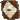

Adema Khael Etain Maseeri Mall Arioch - Cueva
20:49 Adema
Adema  [pressi Cueva] [il Cavaliere è in sella a uno stallone baio, un destriero dal manto nocciola e dalla possente muscolatura. La sua figura svetta dritta, spalle larghe, petto ampio, coperto da un corpetto di cuoio smanicato, che lascia le braccia scoperte. Un lungo reticolo di vene e vecchie cicatrici pallide solca la pelle tra bicipiti e avambracci. Sotto dei pantaloni scuri, infilati in degli stivali poggiati sulle staffe della sellatura. Le dita callose stringono le redini, conducendo lentamente il cavallo in avanti. Vicino al fu Blu, Etain, al quale si rivolge] Francis ti ha mai raccontato qualcosa della Cueva?
[pressi Cueva] [il Cavaliere è in sella a uno stallone baio, un destriero dal manto nocciola e dalla possente muscolatura. La sua figura svetta dritta, spalle larghe, petto ampio, coperto da un corpetto di cuoio smanicato, che lascia le braccia scoperte. Un lungo reticolo di vene e vecchie cicatrici pallide solca la pelle tra bicipiti e avambracci. Sotto dei pantaloni scuri, infilati in degli stivali poggiati sulle staffe della sellatura. Le dita callose stringono le redini, conducendo lentamente il cavallo in avanti. Vicino al fu Blu, Etain, al quale si rivolge] Francis ti ha mai raccontato qualcosa della Cueva?
Adema [pressi Cueva] [il Cavaliere è in sella a uno stallone baio, un destriero dal manto nocciola e dalla possente muscolatura. La sua figura svetta dritta, spalle larghe, petto ampio, coperto da un corpetto di cuoio smanicato, che lascia le braccia scoperte. Un lungo reticolo di vene e vecchie cicatrici pallide solca la pelle tra bicipiti e avambracci. Sotto dei pantaloni scuri, infilati in degli stivali poggiati sulle staffe della sellatura. Le dita callose stringono le redini, conducendo lentamente il cavallo in avanti. Vicino al fu Blu, Etain, al quale si rivolge] Francis ti ha mai raccontato qualcosa della Cueva?20:52 Etain
Etain  [pressi Cueva] Non credo… [ammette ad Adema, scrollando le spalle. Di nuovo in sella, stavolta al suo cavallo, finalmente, affiancata all’altro] mi hanno raccontato di più i bardi. Calci nei punti bassi, boccali rovesciati in testa… [lo incalza] sentiamo una storia tua!
[pressi Cueva] Non credo… [ammette ad Adema, scrollando le spalle. Di nuovo in sella, stavolta al suo cavallo, finalmente, affiancata all’altro] mi hanno raccontato di più i bardi. Calci nei punti bassi, boccali rovesciati in testa… [lo incalza] sentiamo una storia tua!
Etain [pressi Cueva] Non credo… [ammette ad Adema, scrollando le spalle. Di nuovo in sella, stavolta al suo cavallo, finalmente, affiancata all’altro] mi hanno raccontato di più i bardi. Calci nei punti bassi, boccali rovesciati in testa… [lo incalza] sentiamo una storia tua!20:54 Maseeri
Maseeri  [pressi Cueva] [la cavallina pezzata, attaccata al carretto, avanza quieta dietro agli altri cavalli] brava Belinda brava.. [seduta facendo penzolare entrambe le gambe dalla stessa parte sull'animale, lo accarezza assorta ascoltando le chiacchiere dei compagni di viaggio e guardandosi in giro estasiata. La lunga gonna nera con lo spacco in vista lascia intravedere le gambe, la camiciola anch'essa nera, è legata sotto il seno lasciando scoperta la pancia, i capelli lunghi ondeggiano al ritmo della cavalcatura]
[pressi Cueva] [la cavallina pezzata, attaccata al carretto, avanza quieta dietro agli altri cavalli] brava Belinda brava.. [seduta facendo penzolare entrambe le gambe dalla stessa parte sull'animale, lo accarezza assorta ascoltando le chiacchiere dei compagni di viaggio e guardandosi in giro estasiata. La lunga gonna nera con lo spacco in vista lascia intravedere le gambe, la camiciola anch'essa nera, è legata sotto il seno lasciando scoperta la pancia, i capelli lunghi ondeggiano al ritmo della cavalcatura]
Maseeri [pressi Cueva] [la cavallina pezzata, attaccata al carretto, avanza quieta dietro agli altri cavalli] brava Belinda brava.. [seduta facendo penzolare entrambe le gambe dalla stessa parte sull'animale, lo accarezza assorta ascoltando le chiacchiere dei compagni di viaggio e guardandosi in giro estasiata. La lunga gonna nera con lo spacco in vista lascia intravedere le gambe, la camiciola anch'essa nera, è legata sotto il seno lasciando scoperta la pancia, i capelli lunghi ondeggiano al ritmo della cavalcatura]21:01 Vahn [pressi cueva] si sta lasciando trascinare dalla cavalla pezzata di Maseeri, sdraiato a naso in su sul carretto. Sopra di lui, nuvole gonfie delle ultime tenui luci della sera si accavallano tra loro, lasciando intravedere qualche stella. Pizzica le corde del suo liuto, che tiene appoggiato alla pancia. Veste abiti comodi, che gli stanno addosso con una certa svogliata abitudine al bello. Si intravedono i ferri sulle sue orecchie a punta, gli anelli e il baluginare di qualche remoto ciondolo sotto la camicia di lino.
21:05Malll
Malll 
[Cueva, tavolo] <E’ seduto ad un tavolo posto vicino al muro, poco distante dal bancone alla sua sinistra. Dinnanzi a lui Arioch, e una bottiglia di rhum già stappata sul tavolo come divisorio.> Questa, come ti dicevo è la Cueva dei Pirati. <Si guarda attorno. Due bicchierini di vetro dinnanzi a loro.> Versa da bere, dico io! <Digrigna i denti. In testa un cappello con un lembo rialzato ed una piuma bianca.> L’ho rimessa a nuovo io, con la mia ciurma di Pirati. Forse è l’unica struttura che si è salvata dopo il disastro del Ducato. <Serra i denti, infastidito.> Qui, sarà un nostro punto di appoggio per i nostri affari.21:07Adema [pressi Cueva] La Cueva era il ritrovo dei corsari al soldo del Duca, e di tutti quelli che vivevano a metà tra il commercio e il saccheggio. Un luogo che odorava di rum e fum. Anche di coltelli sfoderati facilmente e di dadi che giravano veloci. Non era posto per i Blu. Li tenevo lontani da lì, perchè il nostro codice non poteva piegarsi alle regole sporche di quel luogo. Ma i Rossi ci passavano notte intere, a bere, giocare e menare i pugni. Nè i corsari nè i rossi avevano un codice di onore, ma facevano il loro lavoro. [parla guardando dritto davanti a se, avendo cura di farsi sentire anche dai bardi. Poi gira il mento a favore della nordica] a quei tempi ognuno dava il suo contributo al Ducato. Ai Blu l'Onore, ai Rossi il sangue, ai Corsari le acque. A costo anche di qualche saccheggio come dire.. tollerato. Il Duca sapeva che l'ordine non può esistere senza il caos. Così, nel suo modo imperfetto, anche la Cueva era parte di Ghileas. Un avamposto senza legge, ma al servizio di qualcosa di più grande.
Adema [pressi Cueva] La Cueva era il ritrovo dei corsari al soldo del Duca, e di tutti quelli che vivevano a metà tra il commercio e il saccheggio. Un luogo che odorava di rum e fum. Anche di coltelli sfoderati facilmente e di dadi che giravano veloci. Non era posto per i Blu. Li tenevo lontani da lì, perchè il nostro codice non poteva piegarsi alle regole sporche di quel luogo. Ma i Rossi ci passavano notte intere, a bere, giocare e menare i pugni. Nè i corsari nè i rossi avevano un codice di onore, ma facevano il loro lavoro. [parla guardando dritto davanti a se, avendo cura di farsi sentire anche dai bardi. Poi gira il mento a favore della nordica] a quei tempi ognuno dava il suo contributo al Ducato. Ai Blu l'Onore, ai Rossi il sangue, ai Corsari le acque. A costo anche di qualche saccheggio come dire.. tollerato. Il Duca sapeva che l'ordine non può esistere senza il caos. Così, nel suo modo imperfetto, anche la Cueva era parte di Ghileas. Un avamposto senza legge, ma al servizio di qualcosa di più grande.21:07 Khael [Pressi Cueva] Siede sopra al carretto, dal lato favorevole a quello di Maseeri. Il gioco di luci ed ombre creato dalla luna, si riflette sull’armatura dell’uomo di Ghileas dando vita ad una tonalità di scintille armoniose.
21:09Arioch  [Cueva Tavolo /Mascherato] [Il cappuccio tirato basso sul volto e la maschera d'acciaio annerito celavano ogni tratto del suo viso, rendendolo una presenza spettrale. Solo gli occhi, due fessure fredde e immobili, brillavano appena alla luce tremolante di una candela consumata.Una mano guantata stringe un boccale scheggiato, l’altra riposa vicino all’elsa della spada poggiata al fianco, ascolta interessato le parole di Mall, si guarda intorno curioso] Uhmm.. hai fatto un ottimo lavoro.. anche se in tempi addietro la ricordavo diversa..
[Cueva Tavolo /Mascherato] [Il cappuccio tirato basso sul volto e la maschera d'acciaio annerito celavano ogni tratto del suo viso, rendendolo una presenza spettrale. Solo gli occhi, due fessure fredde e immobili, brillavano appena alla luce tremolante di una candela consumata.Una mano guantata stringe un boccale scheggiato, l’altra riposa vicino all’elsa della spada poggiata al fianco, ascolta interessato le parole di Mall, si guarda intorno curioso] Uhmm.. hai fatto un ottimo lavoro.. anche se in tempi addietro la ricordavo diversa..
Arioch [Cueva Tavolo /Mascherato] [Il cappuccio tirato basso sul volto e la maschera d'acciaio annerito celavano ogni tratto del suo viso, rendendolo una presenza spettrale. Solo gli occhi, due fessure fredde e immobili, brillavano appena alla luce tremolante di una candela consumata.Una mano guantata stringe un boccale scheggiato, l’altra riposa vicino all’elsa della spada poggiata al fianco, ascolta interessato le parole di Mall, si guarda intorno curioso] Uhmm.. hai fatto un ottimo lavoro.. anche se in tempi addietro la ricordavo diversa..21:10Etain [Esterno Cueva] [Addosso gi stessi abiti del pomeriggio, scuri e semplici con il pettorale e gli spallacci a proteggerle il busto. In vita la cinta d’armi con la spada a sinistra. Schiena ritta ma andatura calma, mani sulle redini. Ormai a scarsi metri dalla struttura. Ascolta Adema] Interessante [poi si volta indietro, a guardare i tre sul carretto] Mmm, che silenzio…
Etain [Esterno Cueva] [Addosso gi stessi abiti del pomeriggio, scuri e semplici con il pettorale e gli spallacci a proteggerle il busto. In vita la cinta d’armi con la spada a sinistra. Schiena ritta ma andatura calma, mani sulle redini. Ormai a scarsi metri dalla struttura. Ascolta Adema] Interessante [poi si volta indietro, a guardare i tre sul carretto] Mmm, che silenzio…21:11Maseeri [pressi Cueva] Vahn Vahn siamo arrivati [dice con entusiasmo stiracchiandosi e dando un colpetto alla cavallina la fa accelelare affinchè arrivi presto all'uscio]
Maseeri [pressi Cueva] Vahn Vahn siamo arrivati [dice con entusiasmo stiracchiandosi e dando un colpetto alla cavallina la fa accelelare affinchè arrivi presto all'uscio]21:13 Vahn [esterno cueva] [strimpella una vecchia ballata del ducato, guardando Khael da sotto in su]...acque un giglio nero nel primo campo, nuova voglia del talamo ducale, dopo la prima, di più grezzo stampo, quest'era fiera di nobile natale....[sorride al secondogentio, per poi tirarsi su di colpo a sedere quando viene richiamato da Maseeri. La musica tace.]
Vahn [esterno cueva] [strimpella una vecchia ballata del ducato, guardando Khael da sotto in su]...acque un giglio nero nel primo campo, nuova voglia del talamo ducale, dopo la prima, di più grezzo stampo, quest'era fiera di nobile natale....[sorride al secondogentio, per poi tirarsi su di colpo a sedere quando viene richiamato da Maseeri. La musica tace.]
Vahn [esterno cueva] [strimpella una vecchia ballata del ducato, guardando Khael da sotto in su]...acque un giglio nero nel primo campo, nuova voglia del talamo ducale, dopo la prima, di più grezzo stampo, quest'era fiera di nobile natale....[sorride al secondogentio, per poi tirarsi su di colpo a sedere quando viene richiamato da Maseeri. La musica tace.]21:17Malll [Cueva, tavolo] Sopra ci sono le camere. Dietro al bancone le cantine, e al lato opposto dove siamo seduti noi c’è una sala privata per le riunioni. Era il covo dei Liberi Fratelli della Costa, ed io ero, e sono tutt’ora il loro Capitano. <Spiega all’altro come è composta la taverna. Lo guarda in volto: sulla maschera.> Perché celi il tuo volto, mh? Lo sai che mi sei debitore, dico io, ti ho recuperato infilzato su una picca fuori i cancelli della nera. <Storce le labbra. Una camicia scura, e pantaloni del medesimo colore. Dietro il fianco destro, tra la cintura e i calzoni sbuca uno sciabolotto.> Dico io, scansafatiche, ti ho detto di versare da bere, se vuoi che ti spieghi dove ci troviamo!
Malll [Cueva, tavolo] Sopra ci sono le camere. Dietro al bancone le cantine, e al lato opposto dove siamo seduti noi c’è una sala privata per le riunioni. Era il covo dei Liberi Fratelli della Costa, ed io ero, e sono tutt’ora il loro Capitano. <Spiega all’altro come è composta la taverna. Lo guarda in volto: sulla maschera.> Perché celi il tuo volto, mh? Lo sai che mi sei debitore, dico io, ti ho recuperato infilzato su una picca fuori i cancelli della nera. <Storce le labbra. Una camicia scura, e pantaloni del medesimo colore. Dietro il fianco destro, tra la cintura e i calzoni sbuca uno sciabolotto.> Dico io, scansafatiche, ti ho detto di versare da bere, se vuoi che ti spieghi dove ci troviamo!21:18Adema [esterno Cueva] [giunto nei pressi della struttura, in testa al gruppo con Etain, tira le briglie verso il basso ventre, tanto basta da far fermare l'animale. Tace, annusando l'aria, e buttando gli occhi verso l'ingresso della Cueva. Un bagliore di luce e le chiacchere che provengono dall'interno segnala che il posto non è abbandonato. Si gira verso la nordica, poi un cenno ai bardi] Silenzio. Non siamo soli. [secco] Khael. Con me ed Etain, voi [Maaseri e Vahn] rimanete qui. [non termina neanche di parlare che già si piega in avanti, alza la gamba e scende da cavallo, con un gestio sciolto compiuto innumerevoli volte]
Adema [esterno Cueva] [giunto nei pressi della struttura, in testa al gruppo con Etain, tira le briglie verso il basso ventre, tanto basta da far fermare l'animale. Tace, annusando l'aria, e buttando gli occhi verso l'ingresso della Cueva. Un bagliore di luce e le chiacchere che provengono dall'interno segnala che il posto non è abbandonato. Si gira verso la nordica, poi un cenno ai bardi] Silenzio. Non siamo soli. [secco] Khael. Con me ed Etain, voi [Maaseri e Vahn] rimanete qui. [non termina neanche di parlare che già si piega in avanti, alza la gamba e scende da cavallo, con un gestio sciolto compiuto innumerevoli volte]21:20Etain [Esterno Cueva] [Tira le briglie. Si guarda attorno. Vede e ode le stesse cose di Adema e smonta dal cavallo con un gesto agile e fluido, abitudinario] Sarà qualche brigante. Quando ci siamo stati non c’era nessuno [espressione dubbiosa in volto. Si muove di qualche passo]
Etain [Esterno Cueva] [Tira le briglie. Si guarda attorno. Vede e ode le stesse cose di Adema e smonta dal cavallo con un gesto agile e fluido, abitudinario] Sarà qualche brigante. Quando ci siamo stati non c’era nessuno [espressione dubbiosa in volto. Si muove di qualche passo]21:20 Khael [Pressi Cueva] Osserva Maseeri, inclinando appena il capo. Torna su Vahn, accennando un sorriso di gratitudine. Benchè perso nel proprio cruccio, quelle parole sembrano rianimarlo. La barba ormai folta, marca lineamenti tipici dei contadini di collebruno, zigomi pronunciati e guance asciutte. Alle parole di Adema non replica, si limita a dare un colpo di reni per scendere dal carretto, e prendere passo al seguito del cavaliere. L’elsa della spada dondola sul fianco destro, mentre la lama è abbracciata da un fodero scuro in cuoio che mostra cucite le effigi dei senza re.
21:20 Maseeri [esterno Cueva] aggrotta la fronte e annuisce ad Adema, si lascia scivolare silenziosamente per terra, si sistema la gonna e si muove verso Vahn guardandosi intorno
21:21 Vahn [esterno cueva] indossa stivali da viaggio usati ma decenti, e a parte quei vestiti assortiti che non sembrano ricordare nessuna moda o luogo, non sembra indossare protezioni. Dopo gli ordini marziali di Adema, l'elfo salta giú dal carretto, lasciando il suo liuto lí, ma raccattando uno spadino leggero dalla semplice fattura. Si fa serio in volto, zittendosi e lanciando un'occhiata preoccupata a Maseeri, ora vicina a lui.
21:29Arioch [Cueva Tavolo /Mascherato] Celo il volto perché quello che c’era sotto non esiste più. [Si passa una mano guantata sulla maschera, come a sentirne il peso. Le dita si fermano per un attimo sul bordo, ma non tentarono di rimuoverla.] Ero un uomo, una volta. Poi c'è stata la guerra, poi c'è stata la prigione. Poi ci sei stato tu. Quando mi hai strappato da quella picca, non hai salvato un uomo, Capitano… hai raccolto un'ombra con una spada e una lunga memoria. [Scosta leggermente il mantello] Non ti ho dimenticato, ne il tuo gesto. Ma non confondermi con uno dei tuoi marinai da bettola, ma ora beviamo..
Arioch [Cueva Tavolo /Mascherato] Celo il volto perché quello che c’era sotto non esiste più. [Si passa una mano guantata sulla maschera, come a sentirne il peso. Le dita si fermano per un attimo sul bordo, ma non tentarono di rimuoverla.] Ero un uomo, una volta. Poi c'è stata la guerra, poi c'è stata la prigione. Poi ci sei stato tu. Quando mi hai strappato da quella picca, non hai salvato un uomo, Capitano… hai raccolto un'ombra con una spada e una lunga memoria. [Scosta leggermente il mantello] Non ti ho dimenticato, ne il tuo gesto. Ma non confondermi con uno dei tuoi marinai da bettola, ma ora beviamo..21:33Malll [Cueva, Tavolo] Mezza giornata di marcia, dico io, per giungere qua, devo dire che dal campo è un ottima soluzione. <Ad Arioch, anche se pare lo dice più a se stesso che all’altro.> Ho filibustieri e tagliagole che portano viveri di continuo, ultimamente l’ultima missione per mari mi ha impiegato quasi tutta la mia ciurma. <Fa spallucce> Ma adesso siamo qui, ora, e brindiamo all’essere tornati a casa… E ad aver trovato una casa per i nuovi. <Afferra il bicchierino, uno dei due, con la destra porgendolo in avanti come se stesse aspettando di esserlo riempito.> Riempi questi due bicchieri, e brindiamo! Arr <Ringhia. Ha la pelle baciata dal sole. Sprigiona tutta l’aria di uomo di mare e predone del deserto. Le mani tempestate di anelli, uno è lo sterminio dei ribelli, in argento, con tre teschi raffigurati sopra.>
Malll [Cueva, Tavolo] Mezza giornata di marcia, dico io, per giungere qua, devo dire che dal campo è un ottima soluzione. <Ad Arioch, anche se pare lo dice più a se stesso che all’altro.> Ho filibustieri e tagliagole che portano viveri di continuo, ultimamente l’ultima missione per mari mi ha impiegato quasi tutta la mia ciurma. <Fa spallucce> Ma adesso siamo qui, ora, e brindiamo all’essere tornati a casa… E ad aver trovato una casa per i nuovi. <Afferra il bicchierino, uno dei due, con la destra porgendolo in avanti come se stesse aspettando di esserlo riempito.> Riempi questi due bicchieri, e brindiamo! Arr <Ringhia. Ha la pelle baciata dal sole. Sprigiona tutta l’aria di uomo di mare e predone del deserto. Le mani tempestate di anelli, uno è lo sterminio dei ribelli, in argento, con tre teschi raffigurati sopra.>21:35Adema [esterno Cueva] [il fu Blu avanza per primo: due metri di uomo con spalle corazzate, la sagoma della lama di forgia templare, Raggio di Sole, che spunta da dietro la spalla destra. Le suole risuonano sul tavolato umido, facendo alzare polvere e briciole. La sua figura imponente si staglia all'ingresso, la luce obliqua delle laterne crea nel suo viso ombre che risaltano maggiormente lo sguardo severo, e la cicatrice pallida che sparisce sotto la barba bruna. Gli occhi color dell'acciaio colgono le figure di Malll e Arioch, intervallando tra i due. Fa due passi di lato, lasciando spazio a chi giunge dopo di lui, calpestando il pavimento con sordi rintocchi che sono come lancette che separano la sentenza da un cappio al collo. Si ferma, la voce ferma rimbalza sulle pareti, che tronca l'attesa] Disturbiamo? [il tono che usa lascia intendere una cortesia non concessa ma più un ammonizione: il graffio di chi ha rinvenuto presenze non desiderate]
Adema [esterno Cueva] [il fu Blu avanza per primo: due metri di uomo con spalle corazzate, la sagoma della lama di forgia templare, Raggio di Sole, che spunta da dietro la spalla destra. Le suole risuonano sul tavolato umido, facendo alzare polvere e briciole. La sua figura imponente si staglia all'ingresso, la luce obliqua delle laterne crea nel suo viso ombre che risaltano maggiormente lo sguardo severo, e la cicatrice pallida che sparisce sotto la barba bruna. Gli occhi color dell'acciaio colgono le figure di Malll e Arioch, intervallando tra i due. Fa due passi di lato, lasciando spazio a chi giunge dopo di lui, calpestando il pavimento con sordi rintocchi che sono come lancette che separano la sentenza da un cappio al collo. Si ferma, la voce ferma rimbalza sulle pareti, che tronca l'attesa] Disturbiamo? [il tono che usa lascia intendere una cortesia non concessa ma più un ammonizione: il graffio di chi ha rinvenuto presenze non desiderate]21:35 Adema [ingresso Cueva] //modifica tag.
21:38Etain [Ingresso Cueva] [Si infila al coperto, superando l’uscio dietro ad Adema. Si guarda attorno, agganciando subito le due figure, sconosciute a prima vista. Non fiata, lascia all’altro i convenevoli. Sta solo lì impalata al fianco sinistro del Cavaliere. Un’occhiata lesta a Khael. E niente altro]
Etain [Ingresso Cueva] [Si infila al coperto, superando l’uscio dietro ad Adema. Si guarda attorno, agganciando subito le due figure, sconosciute a prima vista. Non fiata, lascia all’altro i convenevoli. Sta solo lì impalata al fianco sinistro del Cavaliere. Un’occhiata lesta a Khael. E niente altro]21:40Khael [Cueva] Dietro di me, donna. [ Non la guarda, continua ad avanzare, e fa il suo ingresso dentro la curva preceduto dal rumore metallico degli schinieri. Al solito serio, alterna lo sguardo tra Malll ed Arioch mentre si affianca ad Adema. E’ sul secondo che si sofferma, abbozzando una smorfia quasi disgustata. Quasi due metri, stagliati su una corporatura prosperosa ma longilinea. ] Vengono quì alla cueva, coprendosi il volto per la vergogna d’esser fidanzati.
Khael [Cueva] Dietro di me, donna. [ Non la guarda, continua ad avanzare, e fa il suo ingresso dentro la curva preceduto dal rumore metallico degli schinieri. Al solito serio, alterna lo sguardo tra Malll ed Arioch mentre si affianca ad Adema. E’ sul secondo che si sofferma, abbozzando una smorfia quasi disgustata. Quasi due metri, stagliati su una corporatura prosperosa ma longilinea. ] Vengono quì alla cueva, coprendosi il volto per la vergogna d’esser fidanzati.21:42Maseeri [ingresso Cueva, guarda i tre entrare, ascolta un saluto rapido, si volta verso Vahn e fa un cenno poi si passa una mano sul volto come a raccogliere il coraggio ed entra dietro a Khael, si guarda in giro, nota i due e trilla] Buona sera [poi sfila con discrezione più avanti, si guarda intorno e aggiunge con tono allegro] casa dolce casa
Maseeri [ingresso Cueva, guarda i tre entrare, ascolta un saluto rapido, si volta verso Vahn e fa un cenno poi si passa una mano sul volto come a raccogliere il coraggio ed entra dietro a Khael, si guarda in giro, nota i due e trilla] Buona sera [poi sfila con discrezione più avanti, si guarda intorno e aggiunge con tono allegro] casa dolce casa21:43 Vahn [esterno cueva] si assicura lo spadino al fianco, con le sue dita sottili. Ci impiega un po'. Poi guarda il carretto e decide di raccattare pure il liuto, come se fosse incerto del tipo di serata che lo aspetta. Si toglie i capelli chiari che gli erano caduti davanti al volto, frettolosamente. Guarda la figura torreggiante di Adema sparire dentro la Cueva, e si sofferma con gli occhi sulla sua ombra che ora, grazie alle luci interne, si allunga come un ponte scuro tra l'interno e l'esterno del locale. Ascolta, avvicinandosi con passo lieve alla porta, per ultimo. La varca a volto scoperto, fermandosi dietro Maseeri.
21:43 Arioch [Cueva Tavolo /Mascherato] Annuisce una sola volta alle parole di Mall, afferra la bottiglia di Rum e inizia a versare il contenuto nei due bicchierini di vetro, mentre versa con la bottiglia in obliquo alza lo sguardo verso Adema e quando profera parola guarda Mall. Neanche guarda più gli altri che sembrano giungere. Non risponde alle parole di Khael
21:48Malll [Cueva, Tavolo] <Col bicchierino in mano, a mezz’aria, si volta di scatto verso l’ingresso, dove si staglia imponente la figura di Adema.> Disturbare? <Ripete le parole del nuovo giunto, guardandosi attorno: ci sono solo lui ed Arioch lì seduti al tavolo.> Dico io, per nulla! <Sorride, scoprendo la dentatura. In testa il cappello piumato con un lembo rialzato.> Prendete pure posto, e ditemi se gradite dell’ottimo rhum! <Invita quindi a sedere Adema, ad uno dei tavoli liberi. Poi un’occhiata ad Etain, ma non aggiunge altro. Ma ribatte alle parole di Khael, prontamente.> Un volto deturpato, dico io, buonuomo, anch’io l’avrei celato dalla vergogna. <Sogghigna divertito.> Buonasera, bellezza.. Arr…<Guarda un po’ tutti quanti, il complimento è rivolto a Maseeri> Quanta gente, stasera, dico io, Rhum per tutti? <E il bicchierino riempito da Arioch, finirà già nella sua gola, in un sorso netto. Uno soltanto> Ahh! <Spalanca la bocca> Offre il Capitano! <Aggiunge poi a tutti i presenti giunti. Lupo di mare. La spilla dei mari: la rosa a sedici venti, all’altezza del cuora appuntata.>
Malll [Cueva, Tavolo] <Col bicchierino in mano, a mezz’aria, si volta di scatto verso l’ingresso, dove si staglia imponente la figura di Adema.> Disturbare? <Ripete le parole del nuovo giunto, guardandosi attorno: ci sono solo lui ed Arioch lì seduti al tavolo.> Dico io, per nulla! <Sorride, scoprendo la dentatura. In testa il cappello piumato con un lembo rialzato.> Prendete pure posto, e ditemi se gradite dell’ottimo rhum! <Invita quindi a sedere Adema, ad uno dei tavoli liberi. Poi un’occhiata ad Etain, ma non aggiunge altro. Ma ribatte alle parole di Khael, prontamente.> Un volto deturpato, dico io, buonuomo, anch’io l’avrei celato dalla vergogna. <Sogghigna divertito.> Buonasera, bellezza.. Arr…<Guarda un po’ tutti quanti, il complimento è rivolto a Maseeri> Quanta gente, stasera, dico io, Rhum per tutti? <E il bicchierino riempito da Arioch, finirà già nella sua gola, in un sorso netto. Uno soltanto> Ahh! <Spalanca la bocca> Offre il Capitano! <Aggiunge poi a tutti i presenti giunti. Lupo di mare. La spilla dei mari: la rosa a sedici venti, all’altezza del cuora appuntata.>21:52Adema [sala principale] [il Csr non si scompone: resta in piedi, dominando la posizione che l'ombra della sua stazza. Gli occhi ferrosi scavalcano il bicchiere levato, passano dal piumato di Mall al silenzio di Arioch: severi, impassibili, come lame. La voce esce bassa, priva di cortesia superflua] Chi siete? [fa un passo avanti, il legno geme sotto lo stivale: le braccia restano lungo i fianchi, gesto che parla di forza trattenuta] Prima di versare Rum voglio sapere chi siete e perchè siete qui senza invito. [lo sguardo si fissa un battito sul capitano, poi scivola sull'uomo mascherato, misurandone il silenzio. Nessuna minaccia aperta, ma la spada alla schiena vibra appena contro la guaina]
Adema [sala principale] [il Csr non si scompone: resta in piedi, dominando la posizione che l'ombra della sua stazza. Gli occhi ferrosi scavalcano il bicchiere levato, passano dal piumato di Mall al silenzio di Arioch: severi, impassibili, come lame. La voce esce bassa, priva di cortesia superflua] Chi siete? [fa un passo avanti, il legno geme sotto lo stivale: le braccia restano lungo i fianchi, gesto che parla di forza trattenuta] Prima di versare Rum voglio sapere chi siete e perchè siete qui senza invito. [lo sguardo si fissa un battito sul capitano, poi scivola sull'uomo mascherato, misurandone il silenzio. Nessuna minaccia aperta, ma la spada alla schiena vibra appena contro la guaina]21:53Etain [Ingresso Cueva] [Se abbia sentito l’ordine di Khael e lo ignori non è dato sapere. Fatto sta che non risponde a parole bensì a gesti, di certo non stando dietro ma nella stessa linea sua e di Adema] Che accoglienza… [allora sì che parla, dopo le parole dei due venturi, ma il tono vira al neutro. Accento tipico dei Denti, così come il suo aspetto. Avanza per la sala assieme agli altri, guardandosi attorno, annuendo con gli angoli delle labbra all’ingiù, perplessa] Curioso, ah. Siamo stati qui per settimane non c’era un’anima viva, tutto disabitato. Ora improvvisamente spuntano tavernieri e clienti. Ci sono anche le disoneste da qualche parte? [usa parole conosciute ai suoi]
Etain [Ingresso Cueva] [Se abbia sentito l’ordine di Khael e lo ignori non è dato sapere. Fatto sta che non risponde a parole bensì a gesti, di certo non stando dietro ma nella stessa linea sua e di Adema] Che accoglienza… [allora sì che parla, dopo le parole dei due venturi, ma il tono vira al neutro. Accento tipico dei Denti, così come il suo aspetto. Avanza per la sala assieme agli altri, guardandosi attorno, annuendo con gli angoli delle labbra all’ingiù, perplessa] Curioso, ah. Siamo stati qui per settimane non c’era un’anima viva, tutto disabitato. Ora improvvisamente spuntano tavernieri e clienti. Ci sono anche le disoneste da qualche parte? [usa parole conosciute ai suoi]21:54Khael [Cueva] Dev’essere orribile. [ Commenta alla volta di Malll, e prende passo, in direzione di Arioch. Lo sguardo, sebbene perso e assente, sembra focalizzare punti precisi. Inciso sulle pettorine dell’armatura in bassorilievi, il quinto cantico della caduta di Oplit suddiviso in quattro scene che si compiono da sinistra verso destra. ] Posso? [ Non è chiaro a quale dei due uomini si rivolga, ma solleva la mano destra, puntando il dito sulla bottiglia di Rhum. ]
Khael [Cueva] Dev’essere orribile. [ Commenta alla volta di Malll, e prende passo, in direzione di Arioch. Lo sguardo, sebbene perso e assente, sembra focalizzare punti precisi. Inciso sulle pettorine dell’armatura in bassorilievi, il quinto cantico della caduta di Oplit suddiviso in quattro scene che si compiono da sinistra verso destra. ] Posso? [ Non è chiaro a quale dei due uomini si rivolga, ma solleva la mano destra, puntando il dito sulla bottiglia di Rhum. ]21:55Maseeri [stringe con una mano tremante un lembo della camicia di Vahn, che le è vicino poi prende fiato e a voce alta risponde] Grazie Capitano! [si infila lesta verso il bancone a cercar bicchieri e bottiglie, muove veloce le mani, perchè pare un po' tremino ancora quando le tiene ferme ma la voce non traballa] Capitano, voi un'altra bottiglia? [chiede a voce alta]
Maseeri [stringe con una mano tremante un lembo della camicia di Vahn, che le è vicino poi prende fiato e a voce alta risponde] Grazie Capitano! [si infila lesta verso il bancone a cercar bicchieri e bottiglie, muove veloce le mani, perchè pare un po' tremino ancora quando le tiene ferme ma la voce non traballa] Capitano, voi un'altra bottiglia? [chiede a voce alta]21:57Vahn [cueva, ingresso] [guarda i gigli blu con un misto di tensione e divertimento negli occhi, che poi si spostano su Maseeri quando lei si propone locandiera. Fa un paio di passi in avanti, inchinando appena la testa verso Malll, con un gesto di sincera cortesia]...io sono Vahn, cantastorie delle Stelle Erranti. [lo guarda incuriosito]...capitano di che nave? [non c'é scherno nella voce. Una rapida occhiata alla maschera che copre il volto di Arioch, per poi tornare a osservare gli anelli che adornano le mani del pirata.]
Vahn [cueva, ingresso] [guarda i gigli blu con un misto di tensione e divertimento negli occhi, che poi si spostano su Maseeri quando lei si propone locandiera. Fa un paio di passi in avanti, inchinando appena la testa verso Malll, con un gesto di sincera cortesia]...io sono Vahn, cantastorie delle Stelle Erranti. [lo guarda incuriosito]...capitano di che nave? [non c'é scherno nella voce. Una rapida occhiata alla maschera che copre il volto di Arioch, per poi tornare a osservare gli anelli che adornano le mani del pirata.]21:59 Arioch [Cueva Tavolo /Mascherato] Non risponde allo scambio di battute tra Mall e Khael, ricambia il silenzioso sguardo con Adema per una manciata di secondi. Quando finisce di riempire il proprio bicchiere non lo beve, appoggia entrambe le mani guantate sul tavolo piegando di poco la schiena in avanti. Fissa con attenzione la figura di Maseeri, ci mette poco a riconoscerla ma non dice nulla. Alla domanda di Khael non risponde e lo segue con lo sguardo.
21:59 Arioch [Cueva Tavolo /Mascherato] Non risponde allo scambio di battute tra Mall e Khael, ricambia il silenzioso sguardo con Adema per una manciata di secondi. Quando finisce di riempire il proprio bicchiere non lo beve, appoggia entrambe le mani guantate sul tavolo piegando di poco la schiena in avanti. Fissa con attenzione la figura di Maseeri, ci mette poco a riconoscerla ma non dice nulla. Alla domanda di Khael non risponde e lo segue con lo sguardo.
22:05Malll [Cueva, tavolo] Chi sono io? <Si indica con l’indice della mano destra, dove campeggia un enorme zaffiro blu: il sigillo du mar.> Sono il Capitano, Malll de Vance, dei Liberi Fratelli della costa e… <Dopo essersi presentato.> Non ho bisogno di nessun invito, questo posto l’ho tirato su io assieme la mia ciurma di pirati! <Esplica, alzando di poco la voce, il quanto basti per farsi sentire e dare importanza a ciò che proferisce.> Solo settimane? Si vede che eravamo per mari <Ad etain, sorridendo.> Dannazione, nessuno vuole del rhum? Ho detto che offro io! <Lo ripete per la seconda volta a tutti i presenti.> Ma certo, dico io! <A Khael, porgendogli il bicchierino vuoto da dove egli ha bevuto pocanzi.> Ci conosciamo, dico io bellezza? <A Maseeri. Capitano è rivolto a lui? Inarca un sopracciglio: la situazione pare divertirlo. Poi osserva Vahn, l’ultimo del gruppo.> Perla del Deserto, Cantastorie <Dice il nome della nave, sorridendo.>
Malll [Cueva, tavolo] Chi sono io? <Si indica con l’indice della mano destra, dove campeggia un enorme zaffiro blu: il sigillo du mar.> Sono il Capitano, Malll de Vance, dei Liberi Fratelli della costa e… <Dopo essersi presentato.> Non ho bisogno di nessun invito, questo posto l’ho tirato su io assieme la mia ciurma di pirati! <Esplica, alzando di poco la voce, il quanto basti per farsi sentire e dare importanza a ciò che proferisce.> Solo settimane? Si vede che eravamo per mari <Ad etain, sorridendo.> Dannazione, nessuno vuole del rhum? Ho detto che offro io! <Lo ripete per la seconda volta a tutti i presenti.> Ma certo, dico io! <A Khael, porgendogli il bicchierino vuoto da dove egli ha bevuto pocanzi.> Ci conosciamo, dico io bellezza? <A Maseeri. Capitano è rivolto a lui? Inarca un sopracciglio: la situazione pare divertirlo. Poi osserva Vahn, l’ultimo del gruppo.> Perla del Deserto, Cantastorie <Dice il nome della nave, sorridendo.>22:11Adema [sala principale] [non si muove, a qualche passo dal tavolo dei due, solo la mascella si fa più dura sotto la corta barba bruna. Gli occhi d'acciaio si spostano un attimo su Etain e Khael, un cenno tacito che le redini della pazienza son già tirate, poi tornano sul capitano] La Cueva era spoglia e silenziosa quando l'abbiamo trovata. [il tono è basso e tagliente] gli ultimi pirati che servivano il Ducato salparono anni fa, quando queste mura caddero. Da allora, nessuno più ne ha calpestato il suolo. [fa un altro passo avanti, la lama sulla schiena scricchiola] quindi Capitano, o la tua ciurma ha usurpato un rifugio che non le appartiene, o stai mentendo. In entrambi i casi, sei nel posto sbagliato. [un lampo freddo negli occhi] Parla Capitano, prima che la mia pazienza finisca. Spiegami perchè sei qui sotto il tetto di Ghileas, e dimostrami che non sei nemico. Altrimenti ti posso assicurare che la prossima nave che attraccherà servirà solo per portare via i vostri corpi.
Adema [sala principale] [non si muove, a qualche passo dal tavolo dei due, solo la mascella si fa più dura sotto la corta barba bruna. Gli occhi d'acciaio si spostano un attimo su Etain e Khael, un cenno tacito che le redini della pazienza son già tirate, poi tornano sul capitano] La Cueva era spoglia e silenziosa quando l'abbiamo trovata. [il tono è basso e tagliente] gli ultimi pirati che servivano il Ducato salparono anni fa, quando queste mura caddero. Da allora, nessuno più ne ha calpestato il suolo. [fa un altro passo avanti, la lama sulla schiena scricchiola] quindi Capitano, o la tua ciurma ha usurpato un rifugio che non le appartiene, o stai mentendo. In entrambi i casi, sei nel posto sbagliato. [un lampo freddo negli occhi] Parla Capitano, prima che la mia pazienza finisca. Spiegami perchè sei qui sotto il tetto di Ghileas, e dimostrami che non sei nemico. Altrimenti ti posso assicurare che la prossima nave che attraccherà servirà solo per portare via i vostri corpi.22:11 FrancisLake [Tavolo in disparte] varca la soglia della cueva. Indossa un armatura brunita, in acciaio. Sul petto svetta il vessillo del drago nero di Necromunda. Passa lo sguardo sui presenti. Si siede ad un tavolo in disparte. Sguaina la spada e la mette sul tavolo. Quindi osserva.
22:12Etain [Ingresso Cueva] [Guarda Adema e Khael. E poi raggiunge il tavolo, dal lato di MALLL. Pacata nei movimenti, non tradisce grandi sentimenti o emozioni. Coperta dalle protezioni al busto e la spada infoderata dal lato sinistro. Gli occhi però, d’un verde acceso, sono vispi e saettano sui due senza mollarli più] Tirata su tu? Questa rovina? Se tieni così anche la tua nave si spiega perché non abbia mai sentito il tuo nome, ah [gli si ferma a un metro più o meno] Io dico che menti, uomo. E io le bugie le fiuto come un beccamorto odora la decomposizione… [sorride appena la Nordica. Ma è un ghigno che si ferma alle labbra, perché gli occhi non sorridono affatto] Nel deserto non ci sono perle. Ecco perché. Il mare tu l’hai visto nei tuoi sogni.
Etain [Ingresso Cueva] [Guarda Adema e Khael. E poi raggiunge il tavolo, dal lato di MALLL. Pacata nei movimenti, non tradisce grandi sentimenti o emozioni. Coperta dalle protezioni al busto e la spada infoderata dal lato sinistro. Gli occhi però, d’un verde acceso, sono vispi e saettano sui due senza mollarli più] Tirata su tu? Questa rovina? Se tieni così anche la tua nave si spiega perché non abbia mai sentito il tuo nome, ah [gli si ferma a un metro più o meno] Io dico che menti, uomo. E io le bugie le fiuto come un beccamorto odora la decomposizione… [sorride appena la Nordica. Ma è un ghigno che si ferma alle labbra, perché gli occhi non sorridono affatto] Nel deserto non ci sono perle. Ecco perché. Il mare tu l’hai visto nei tuoi sogni.22:12Khael [Cueva] Grazie infinite, buon uomo. [ E afferra il bicchiere con la mano destra, tenendolo a mezz’aria. Quasi contemporaneamente, azzerate le distanze dai due, carica il braccio fin sopra la testa, e prova a schiantarlo sulla maschera di Arioch, in quello che somiglia molto ad uno schiaffo a mano aperta. La mano libera, nel mentre, scivola sull’elsa della spada compiendo una traiettoria obliqua che segue la cinta. ]
Khael [Cueva] Grazie infinite, buon uomo. [ E afferra il bicchiere con la mano destra, tenendolo a mezz’aria. Quasi contemporaneamente, azzerate le distanze dai due, carica il braccio fin sopra la testa, e prova a schiantarlo sulla maschera di Arioch, in quello che somiglia molto ad uno schiaffo a mano aperta. La mano libera, nel mentre, scivola sull’elsa della spada compiendo una traiettoria obliqua che segue la cinta. ]Khael ha colpito con un pugno Arioch causando 15 punti ferita. Efficienza 77 caso 40
22:16Maseeri [recuperato il rhum e dei bicchieri si dirige verso il tavolo] capitano non dire fesserie, questo posto era il covo della fratellanza senza vessilli e lòo so perchè ero una di loro, e se non credi a me, trova il Corvo e chiedi a lui! [sorride facendogli lì'occhiolino e sta per appoggiare il vassoio quando Khael prende l'iniziativa [ dei del cielo, neanche arrivati [mormora facendo un paio di passi indietro e appoggiando il vassoio su un tavolo vuoto]
Maseeri [recuperato il rhum e dei bicchieri si dirige verso il tavolo] capitano non dire fesserie, questo posto era il covo della fratellanza senza vessilli e lòo so perchè ero una di loro, e se non credi a me, trova il Corvo e chiedi a lui! [sorride facendogli lì'occhiolino e sta per appoggiare il vassoio quando Khael prende l'iniziativa [ dei del cielo, neanche arrivati [mormora facendo un paio di passi indietro e appoggiando il vassoio su un tavolo vuoto]22:17 Vahn [cueva, ingresso] sorride di rimando a Malll, quando sente il nome della sua nave. Le sue labbra si schiudono per ribattere qualcosa, ma sia l'ingresso di Francis Lake, sia il manrovescio di Khael sembrano consigliare al bardo di tacere. E cosí fa, rimanendo sulla soglia aperta della Cueva e poggiando la schiena sulla parete interna. Uno sguardo a Maseeri che dice in silenzio qualcosa che somiglia a un rassegnato ritornello. Come se niente fosse, l'elfo imbraccia il suo liuto e strimpella un giro di note che somiglia molto a una vecchia e sconcia canzone di mare.
22:24Malll [Cueva, tavolo] La mia ciurma non ha né usurpato ne sta mentendo: di sopra ci sono le camere, la più grande è del Capitano, la mia. Alla tua destra, dietro a quella porta. <la indica> C’è la sala riunioni. Dietro al bancone <Va ad indicare anche il bancone> Le cantine. <Esplica, ma pare adesso infastidito dalle accuse mosse da Adema.> Ed uno dei miei tagliagole, Zhugord, è arrivato in finale al torneo delle Leggende di Iolia. Svettavano bandiere nere con teschi bianchi. La folla era piena di pirati: filibustieri, tagliagole, le peggiori specie, tutti uomini del sottoscritto, dico io! <Esplica> Un orco Pirata non passa inosservato. <Stringe i denti> Qui non è Ghileas. Qui è la Cueva, fuori le mura… Mure invalicabili. Cosa stare rivendicando, dico io? Cercate guai? Io mi sono presentato, ma ne tu, ne i tuoi uomini, se non il cantastorie delle stelle erranti. <Verso Etain.> Perla del deserto sai perché? <Prontamente, la fissa> Perché il sottoscritto comandava le tribu del deserto, e non è di certo colpa mia, se ho fatto un buon lavoro rimanendo nell’innominato. Da qui il nome della mia nave. Ma mi chiederete di vedere anche lei? <Guarda un po’ tutti quanti> Ma che problemi avete, dico io. <E vede il gesto di Kahel> Hai per caso battuto la testa? Sai quanto costa questo rhum? <Una mano istintivamente va dietro la schiena, afferrando il manico dello sciabolotto che non estrae. Non presta attenzione a quanto detto da Maseeri>
Malll [Cueva, tavolo] La mia ciurma non ha né usurpato ne sta mentendo: di sopra ci sono le camere, la più grande è del Capitano, la mia. Alla tua destra, dietro a quella porta. <la indica> C’è la sala riunioni. Dietro al bancone <Va ad indicare anche il bancone> Le cantine. <Esplica, ma pare adesso infastidito dalle accuse mosse da Adema.> Ed uno dei miei tagliagole, Zhugord, è arrivato in finale al torneo delle Leggende di Iolia. Svettavano bandiere nere con teschi bianchi. La folla era piena di pirati: filibustieri, tagliagole, le peggiori specie, tutti uomini del sottoscritto, dico io! <Esplica> Un orco Pirata non passa inosservato. <Stringe i denti> Qui non è Ghileas. Qui è la Cueva, fuori le mura… Mure invalicabili. Cosa stare rivendicando, dico io? Cercate guai? Io mi sono presentato, ma ne tu, ne i tuoi uomini, se non il cantastorie delle stelle erranti. <Verso Etain.> Perla del deserto sai perché? <Prontamente, la fissa> Perché il sottoscritto comandava le tribu del deserto, e non è di certo colpa mia, se ho fatto un buon lavoro rimanendo nell’innominato. Da qui il nome della mia nave. Ma mi chiederete di vedere anche lei? <Guarda un po’ tutti quanti> Ma che problemi avete, dico io. <E vede il gesto di Kahel> Hai per caso battuto la testa? Sai quanto costa questo rhum? <Una mano istintivamente va dietro la schiena, afferrando il manico dello sciabolotto che non estrae. Non presta attenzione a quanto detto da Maseeri>22:24Arioch [Cueva Tavolo /Mascherato] [Il colpo schianta la maschera con violenza, e il metallo scricchiola sotto la forza della mano di Khael. Barcolla appena con la testa, ma non cade.Si raddrizza lentamente. La maschera si gira a scatti verso Khael. Dal punto dell’impatto cola sangue scuro, lento] Se volevi provocarmi, potevi guardarmi in faccia se solo avessi il coraggio di chiedermi chi ero. Ma tu non vuoi sapere chi sono. Tu vuoi solo vedere quanto puoi spingerti… prima che io ti spezzi. [Afferra la bottiglia di Rhum con la mano destra ma non fa niente ancora]
Arioch [Cueva Tavolo /Mascherato] [Il colpo schianta la maschera con violenza, e il metallo scricchiola sotto la forza della mano di Khael. Barcolla appena con la testa, ma non cade.Si raddrizza lentamente. La maschera si gira a scatti verso Khael. Dal punto dell’impatto cola sangue scuro, lento] Se volevi provocarmi, potevi guardarmi in faccia se solo avessi il coraggio di chiedermi chi ero. Ma tu non vuoi sapere chi sono. Tu vuoi solo vedere quanto puoi spingerti… prima che io ti spezzi. [Afferra la bottiglia di Rhum con la mano destra ma non fa niente ancora]22:27Adema [sala principale] [sventola una mano al dire di Malll, come se non desse alcun peso alle sue parole] Puoi convincere me, Capitano. Ma dubito convincerai loro. [accenna ai compagni, mentre l'ingresso di Francis attira per un attimo la sua attenzione. Torna su Malll] La Cueva è nostra, Malll de Vance. Qualsiasi cosa su cui possano posare i tuoi occhi intorno ad essa. [fa una piccola pausa] Chi siamo noi? Noi siamo Ghileas.
Adema [sala principale] [sventola una mano al dire di Malll, come se non desse alcun peso alle sue parole] Puoi convincere me, Capitano. Ma dubito convincerai loro. [accenna ai compagni, mentre l'ingresso di Francis attira per un attimo la sua attenzione. Torna su Malll] La Cueva è nostra, Malll de Vance. Qualsiasi cosa su cui possano posare i tuoi occhi intorno ad essa. [fa una piccola pausa] Chi siamo noi? Noi siamo Ghileas.22:28 FrancisLake [Tavolo in disparte] mette la mano sull'elsa della spada. La sposta sul tavolo, puntando prima Malll, poi Arioch. Sembra indeciso. Osserva il cantore, gli strizza l'occhio mancino. Il suo tavolo e nei pressi dell'uscio.
22:28FrancisLake  [Tavolo in disparte] Per come la vedo io. Potreste fare che ricominciare dall'inizio.
[Tavolo in disparte] Per come la vedo io. Potreste fare che ricominciare dall'inizio.
FrancisLake [Tavolo in disparte] Per come la vedo io. Potreste fare che ricominciare dall'inizio.22:29 FrancisLake [Tavolo in disparte] // ricominciate
22:29Etain [Cueva - Tavolo] È Arioch, il cane della Ventura [non appena sente il Segugio parlare, a tutti e a nessuno in particolare] Ma secondo te, mi interessa sapere chi sei? So già chi sei, un pomposo bugiardo [a Malll, con aria di sufficienza] Togli- quella mano -dalla spada, uomo [questa sì che è una minaccia, detta con l’assertività che le appartiene. La voce si fa dura, le parole si scandiscono, una a una. Guarda Lake, guarda Khael, guarda Adema. E poi i bardi.]
Etain [Cueva - Tavolo] È Arioch, il cane della Ventura [non appena sente il Segugio parlare, a tutti e a nessuno in particolare] Ma secondo te, mi interessa sapere chi sei? So già chi sei, un pomposo bugiardo [a Malll, con aria di sufficienza] Togli- quella mano -dalla spada, uomo [questa sì che è una minaccia, detta con l’assertività che le appartiene. La voce si fa dura, le parole si scandiscono, una a una. Guarda Lake, guarda Khael, guarda Adema. E poi i bardi.]22:32Khael [Cueva] Non ho mai minacciato nessuno nella mia vita, eunuco. [ Ed è con la sinistra che sguaina la spada, lentamente. Il metallo stride, scivolando sul fermo finale della fodera. ] Dèi balordi. [ Alle parole di Etain, piega leggermente il capo, guardando la maschera. ] Arioch?
Khael [Cueva] Non ho mai minacciato nessuno nella mia vita, eunuco. [ Ed è con la sinistra che sguaina la spada, lentamente. Il metallo stride, scivolando sul fermo finale della fodera. ] Dèi balordi. [ Alle parole di Etain, piega leggermente il capo, guardando la maschera. ] Arioch?22:32 Maseeri lancia un'occhiata a Vahn e si sposta su un tavolo vuoto, poco lontano, ci si siede sopra e sgancia il flauto d'argento, socchiude gli occhi portandolo alle labbra e comincia a suonarlo facendo il controcanto a Vahn, lancia un'occhiata a Francis Lake, suona senza fermarsi
22:35 Vahn [cueva, ingresso] osserva Francis Lake al tavolo lí vicino, mentre le note sommesse del liuto fanno da ancelle allo scaldarsi della scena lí innanzi. Coglie il cenno del primogenito a cui risponde con un mezzo sorriso. Al sentire il nome di Arioch, l'elfo riporta gli occhi con piú attenzione ora su quella maschera incrinata. Ancora tace, lasciando la musica a dimesso commento. Sorride a Maseeri, quando lei si unisce. Un sorriso vagamente teso, e negli occhi quell'ambigua voglia di saper come andrá a finire.
22:48Arioch [Cueva Tavolo /Mascherato] Arioch?[Ripete quel nome a Etain] Penso che tu abbia bevuto un po' troppo..[Risponde alla donna mentre lo sguardo scivola verso Khael che estrae la spada. Tiene sempre la bottiglia di Rhum con la mano destra ben salda]
Arioch [Cueva Tavolo /Mascherato] Arioch?[Ripete quel nome a Etain] Penso che tu abbia bevuto un po' troppo..[Risponde alla donna mentre lo sguardo scivola verso Khael che estrae la spada. Tiene sempre la bottiglia di Rhum con la mano destra ben salda]22:49Malll [Cueva, tavolo] Ultimo torneo delle Leggende di Iolia, la Finale, è arrivato un Orco Pirata, è un mio uomo. Ma dico io, stasera, ancora non si beve e pare che siate tutti ubriachi? <Non sta capendo un granchè. Molla la presa da dietro la schiena sull’arma corta, la ripone sulla propria coscia.> Voi siete Ghileas? <Fissa Adema in volto> Allora porco Astendar portatemici ora dentro a quelle mura! E vediamo chi dice menzogne! <Lui, è sicuro in ciò che dice. Un’occhiata rapida a Lake.> Ricominciamo daccapo, signori! <Smanaccia le mani dinnanzi il busto a mezz’aria, ripetendo le parole di Francis> Cosa volete da noi? <Serio> Io come si confà mi sono presentato, ho narrato a voi la mia storia, ma non conosco ne i vostri nomi ne il reale motivo che vi ha condotti qui stasera. <Serio. Poi pare che la musica dei bardi lo travolga> Ah dico io! Si che loro hanno capito come si fa! Rhum per tutti! <Lo ripete ad alta voce> Abbassa quell’arma. Stiamo ricominciando daccapo. E passami quella dannata bottiglia di rhum, ho sete! <Ad Arioch, allungando la destra sopra il tavolo, come ad aspettare la bottiglia richiesta.>
Malll [Cueva, tavolo] Ultimo torneo delle Leggende di Iolia, la Finale, è arrivato un Orco Pirata, è un mio uomo. Ma dico io, stasera, ancora non si beve e pare che siate tutti ubriachi? <Non sta capendo un granchè. Molla la presa da dietro la schiena sull’arma corta, la ripone sulla propria coscia.> Voi siete Ghileas? <Fissa Adema in volto> Allora porco Astendar portatemici ora dentro a quelle mura! E vediamo chi dice menzogne! <Lui, è sicuro in ciò che dice. Un’occhiata rapida a Lake.> Ricominciamo daccapo, signori! <Smanaccia le mani dinnanzi il busto a mezz’aria, ripetendo le parole di Francis> Cosa volete da noi? <Serio> Io come si confà mi sono presentato, ho narrato a voi la mia storia, ma non conosco ne i vostri nomi ne il reale motivo che vi ha condotti qui stasera. <Serio. Poi pare che la musica dei bardi lo travolga> Ah dico io! Si che loro hanno capito come si fa! Rhum per tutti! <Lo ripete ad alta voce> Abbassa quell’arma. Stiamo ricominciando daccapo. E passami quella dannata bottiglia di rhum, ho sete! <Ad Arioch, allungando la destra sopra il tavolo, come ad aspettare la bottiglia richiesta.>22:52FrancisLake [Tavolo in disparte] Cantore. La ballata del giglio, se non vi dispiace[sospira alzandosi] Vi spiego meglio la situazione, Capitano. Qui stasera qualcuno potrebbe morire. Noi, voi, chicchessia. Ora la nostra piccola combriccola ha vissuto i giorni antecedenti a questo in abissi che neanche le navi hanno mai osato solcare. Siamo un tantino euforici, visto che siamo ad un passo dai nostri successi. E vedervi qui oggi ci sta portando nella condizione di terminare una protesta, come era solito in questo luoghi, con il ferro e non con il verbo [in piedi spada alla mano] per usare uno dei vostri termini marinareschi. Utilizziamo un parlez. Evitatevi una morte dolorosa e accordatevi con la donna e l'uomo. Contrariamente ci sarà da dipingere nuovamente le pareti e pulire le budella. [China il capo verso malll cordiale, ma terribilmente serio] Francis Lake. Figlio di Dominique Lake detto DarkEyes
FrancisLake [Tavolo in disparte] Cantore. La ballata del giglio, se non vi dispiace[sospira alzandosi] Vi spiego meglio la situazione, Capitano. Qui stasera qualcuno potrebbe morire. Noi, voi, chicchessia. Ora la nostra piccola combriccola ha vissuto i giorni antecedenti a questo in abissi che neanche le navi hanno mai osato solcare. Siamo un tantino euforici, visto che siamo ad un passo dai nostri successi. E vedervi qui oggi ci sta portando nella condizione di terminare una protesta, come era solito in questo luoghi, con il ferro e non con il verbo [in piedi spada alla mano] per usare uno dei vostri termini marinareschi. Utilizziamo un parlez. Evitatevi una morte dolorosa e accordatevi con la donna e l'uomo. Contrariamente ci sarà da dipingere nuovamente le pareti e pulire le budella. [China il capo verso malll cordiale, ma terribilmente serio] Francis Lake. Figlio di Dominique Lake detto DarkEyes22:54Etain [Cueva - Tavolo] [La musica dei bardi rende sinistramente amena la situazione. Eppure alla Nordica non pare dispiacerle, anzi. Sembra quasi più concentrata, più presente. Sempre lì impalata, nei pressi di Malll. Attende che ricominci, come suggerito da Lake. Ma non pare compiaciuta del tutto da quel che ode dal Pirata. Guarda Arioch] Arioch, Arioch. [insiste, convinta] così come ti sei presentato alla fontana ricordi? La tua mano sul mio culo, il mio pugno sui tuoi denti… la tua voce non la dimentico neanche se batto la testa sul muro, uomo. La stessa dell’altra sera alla festa [scrolla le spalle, volgendo quindi l’attenzione su Lake, a quel che dice] Accordiamoci, dico io [conviene con il Drago Nero, guardando Mall. Sorride]
Etain [Cueva - Tavolo] [La musica dei bardi rende sinistramente amena la situazione. Eppure alla Nordica non pare dispiacerle, anzi. Sembra quasi più concentrata, più presente. Sempre lì impalata, nei pressi di Malll. Attende che ricominci, come suggerito da Lake. Ma non pare compiaciuta del tutto da quel che ode dal Pirata. Guarda Arioch] Arioch, Arioch. [insiste, convinta] così come ti sei presentato alla fontana ricordi? La tua mano sul mio culo, il mio pugno sui tuoi denti… la tua voce non la dimentico neanche se batto la testa sul muro, uomo. La stessa dell’altra sera alla festa [scrolla le spalle, volgendo quindi l’attenzione su Lake, a quel che dice] Accordiamoci, dico io [conviene con il Drago Nero, guardando Mall. Sorride]22:57Khael [Cueva] [ Fa roteare la spada due volte, sollevando la lama in favore di Arioch, poi, Malll. Lo fissa, immobile. E’ a lui che parla. ] Mio fratello ama i convenevoli. Io, no. [ Non ha l’aria di chi vuol rimettere l’arma nella guaina. ] Non te lo dirò di nuovo e non aspetterò oltre. Toglietevi dai piedi, e forse, dico forse, vedrete l’alba di domani.
Khael [Cueva] [ Fa roteare la spada due volte, sollevando la lama in favore di Arioch, poi, Malll. Lo fissa, immobile. E’ a lui che parla. ] Mio fratello ama i convenevoli. Io, no. [ Non ha l’aria di chi vuol rimettere l’arma nella guaina. ] Non te lo dirò di nuovo e non aspetterò oltre. Toglietevi dai piedi, e forse, dico forse, vedrete l’alba di domani.22:58 Maseeri al sentire le parole di Francis smette di suonare, abbassa il flauto, osserva in silenzio
23:00Vahn [cueva, ingresso] [continua a suonare quella musica che lascia spazio alle parole, le avvolge e ne scarica in parte la tensione. Alla richiesta del fu Duca, la musica si piega e si adatta dopo un attimo di silenzio, facendosi antica. L'elfo si appoggia al tavolo dove sta Maseeri e a mezza voce, al giro piú cupo di note, prende a mormorare quelle parole che narrano, da sempre, quelle mura maledette e chi le abita]... Nel cor gentil lo spirto suo s’aduna, ch’ad ogni fede e onor pose dimora, e 'l giglio in petto fu sua bella spoglia. Ma ‘l mondo, cieco, spinse sua fortuna, ché l’alto duce, in ira ed ombra ancora, sputò sul giuramento, e fe' cordoglia....[la sua voce tersa come fiume di montagna, dentro cui sembrano guizzare i suoi occhi, come lucci inquieti e affamati.]
Vahn [cueva, ingresso] [continua a suonare quella musica che lascia spazio alle parole, le avvolge e ne scarica in parte la tensione. Alla richiesta del fu Duca, la musica si piega e si adatta dopo un attimo di silenzio, facendosi antica. L'elfo si appoggia al tavolo dove sta Maseeri e a mezza voce, al giro piú cupo di note, prende a mormorare quelle parole che narrano, da sempre, quelle mura maledette e chi le abita]... Nel cor gentil lo spirto suo s’aduna, ch’ad ogni fede e onor pose dimora, e 'l giglio in petto fu sua bella spoglia. Ma ‘l mondo, cieco, spinse sua fortuna, ché l’alto duce, in ira ed ombra ancora, sputò sul giuramento, e fe' cordoglia....[la sua voce tersa come fiume di montagna, dentro cui sembrano guizzare i suoi occhi, come lucci inquieti e affamati.]23:08 Arioch [Cueva Tavolo /Mascherato] Resta il silenzio ancora seduto. Ignora completamente Etain facendo finta che non esiste in quel momento. Lo Sguardo si sposta su Malll, in attesa di un suo cenno dopo tutte quelle minacce ricevute. La mano lentamente va a serpeggiare contro l'elsa della sciabola che non estrae ancora.
23:09Malll [Cueva, tavolo] <Ascolta le parole di FrancisLake, lo lascia parlare, non interrompendolo.> Francis Lake, ho appena detto di ricominciare daccapo. Nessuno morirà questa sera. E ripeto. Cosa volete da noi? Ma che non si dica di me che sia uno che racconta menzogne, perché sono tutto furche come mi stanno dipingendo tutti i presenti qui oggi, questa sera, che non hanno avuto manco la decenza di presentarsi. <Alludendo agli altri presenti.> Il vostro nome. Con chi sto parlando. <Ad Etain> E cosa volete. <Ripete.> Sono qui, i miei uomini sono qui fuori. Se non mi vedranno tornare saranno il doppio di voi qui presenti. E abbiamo detto che stasera non morirà nessuno. <Stride i denti il Capitano, infastidito> dico io, accordiamoci su che cosa? <Incita la donna ad essere più chiara possibile. Resta seduto.> Umh <Osserva lo sventolare dell’arma di Khael> Dobbiamo andare. Sparire. Restare. Ricominciare daccapo, o accordarci su qualcosa che ancora mi è oscuro? <E’ davvero spaesato da ciò che gli si stà palesando dinnanzi adesso questa sera alla Cueva>
Malll [Cueva, tavolo] <Ascolta le parole di FrancisLake, lo lascia parlare, non interrompendolo.> Francis Lake, ho appena detto di ricominciare daccapo. Nessuno morirà questa sera. E ripeto. Cosa volete da noi? Ma che non si dica di me che sia uno che racconta menzogne, perché sono tutto furche come mi stanno dipingendo tutti i presenti qui oggi, questa sera, che non hanno avuto manco la decenza di presentarsi. <Alludendo agli altri presenti.> Il vostro nome. Con chi sto parlando. <Ad Etain> E cosa volete. <Ripete.> Sono qui, i miei uomini sono qui fuori. Se non mi vedranno tornare saranno il doppio di voi qui presenti. E abbiamo detto che stasera non morirà nessuno. <Stride i denti il Capitano, infastidito> dico io, accordiamoci su che cosa? <Incita la donna ad essere più chiara possibile. Resta seduto.> Umh <Osserva lo sventolare dell’arma di Khael> Dobbiamo andare. Sparire. Restare. Ricominciare daccapo, o accordarci su qualcosa che ancora mi è oscuro? <E’ davvero spaesato da ciò che gli si stà palesando dinnanzi adesso questa sera alla Cueva>23:19FrancisLake [Tavolo in disparte] Di uomini fuori c'è ne sono quanti ne volete Capitano. Con le armature, con le spada, con le lance e con i ceppi.Vi lascio discutere con la donna, lei vi spiegherà. [Quindi si volta verso Arioch] Sarò ancora qui qualche giorno condottiero. L'imperatore vorrebbe Elimar al suo desco. Non ho intenzione né di prenderlo, ne di combattere. Non sono a casa mia e non voglio creare faide. Prima che Demios si incazzi e decida di distruggere tutto nella speranza di trovarlo tra le fiamme. Se egli senza ceppi e magari con un seguito che lo difenda volesse seguirmi nei prossimi giorni per discutere con l imperatore, sarebbe un gesto che egli apprezzerebbe. E indubbiamente gli salverebbe la vita.
FrancisLake [Tavolo in disparte] Di uomini fuori c'è ne sono quanti ne volete Capitano. Con le armature, con le spada, con le lance e con i ceppi.Vi lascio discutere con la donna, lei vi spiegherà. [Quindi si volta verso Arioch] Sarò ancora qui qualche giorno condottiero. L'imperatore vorrebbe Elimar al suo desco. Non ho intenzione né di prenderlo, ne di combattere. Non sono a casa mia e non voglio creare faide. Prima che Demios si incazzi e decida di distruggere tutto nella speranza di trovarlo tra le fiamme. Se egli senza ceppi e magari con un seguito che lo difenda volesse seguirmi nei prossimi giorni per discutere con l imperatore, sarebbe un gesto che egli apprezzerebbe. E indubbiamente gli salverebbe la vita.23:20Zhugord [esterno cueva ] ( a passo lento , quasi cadenzato e poco aggraziato Zhugord si appresta a raggiungere la cueva )
23:23Etain [Cueva - Tavolo] [Inspira a fondo, gonfiando il petto. Poi gli concede la presentazione] Etain, uomo. Figlia di Hjalmar. Questore di Mynbruje. Figlia acquisita del Giglio [come quello che riposa sul suo anulare, unico adorno che ha addosso. Spada esclusa] E incaricata di rimettere in piedi Ghileas e il Ducato. Ti evito i “fu”. Quelli li lascio ai pomposi insicuri [scrolla gli spallacci che la proteggono] Cosa vogliamo… vogliamo capire in che modo pensate di piantare le tende in una terra che non v’appartiene, per cominciare. Non ci sono né accordi né intese. Discutiamo di questo, per cominciare [sempre in piedi. Sempre nella stessa posizione. Ascolta Lake, non mette lingua su quella questione]
Etain [Cueva - Tavolo] [Inspira a fondo, gonfiando il petto. Poi gli concede la presentazione] Etain, uomo. Figlia di Hjalmar. Questore di Mynbruje. Figlia acquisita del Giglio [come quello che riposa sul suo anulare, unico adorno che ha addosso. Spada esclusa] E incaricata di rimettere in piedi Ghileas e il Ducato. Ti evito i “fu”. Quelli li lascio ai pomposi insicuri [scrolla gli spallacci che la proteggono] Cosa vogliamo… vogliamo capire in che modo pensate di piantare le tende in una terra che non v’appartiene, per cominciare. Non ci sono né accordi né intese. Discutiamo di questo, per cominciare [sempre in piedi. Sempre nella stessa posizione. Ascolta Lake, non mette lingua su quella questione]23:23Maseeri [si stacca dal tavolo e avanza fra gli uomini[ scusate [alza la mano, un cenno] signor Lake, signor Capitano [guarda i due uomini dritto negli occhi] perché non la affidate a noi? [indica se stessa e il bardo alle sue spalle] sono Maseeri bardo delle Stelle Erranti, prima cantastorie della Fratellanza senza Vessilli, lui è Vahn, della stessa compagnia, fratello senza vessilli come me; credo siamo tutti d'accordo che non costituiremmo una minaccia per nessuno di voi, potrebbe diventare un porto franco, dove vige il parlez, si manterrebbe l'equilibrio fra le parti ed entrambe le parti [indica prima Francis e poi Malll] potrebbero vigilare che rimanga un luogo neutrale [tace un istante lasciando assimilare le sue parole al pubblico] è una taverna non un giacimento d'oro, quattro tavoli e forse tre letti, chi verrà qui saprà di essere in zona neutrale, niente uccisioni e chi rompe paga. [piega appena la testa di lato] il denaro guadagnato verrà reinvestito in questo luogo, compensi onesti per chi ci lavora e per chi commercia [torna a osservarli]
Maseeri [si stacca dal tavolo e avanza fra gli uomini[ scusate [alza la mano, un cenno] signor Lake, signor Capitano [guarda i due uomini dritto negli occhi] perché non la affidate a noi? [indica se stessa e il bardo alle sue spalle] sono Maseeri bardo delle Stelle Erranti, prima cantastorie della Fratellanza senza Vessilli, lui è Vahn, della stessa compagnia, fratello senza vessilli come me; credo siamo tutti d'accordo che non costituiremmo una minaccia per nessuno di voi, potrebbe diventare un porto franco, dove vige il parlez, si manterrebbe l'equilibrio fra le parti ed entrambe le parti [indica prima Francis e poi Malll] potrebbero vigilare che rimanga un luogo neutrale [tace un istante lasciando assimilare le sue parole al pubblico] è una taverna non un giacimento d'oro, quattro tavoli e forse tre letti, chi verrà qui saprà di essere in zona neutrale, niente uccisioni e chi rompe paga. [piega appena la testa di lato] il denaro guadagnato verrà reinvestito in questo luogo, compensi onesti per chi ci lavora e per chi commercia [torna a osservarli]23:28Vahn [cueva] [il bardo suona ancora qualche giro di quella vecchia ballata del giglio, come da commissione ricevuta. Poi, quando Francis Lake finisce il suo invito, con occhi stanchi, fa tacere la musica mettendo una mano sulle corde. Si stacca dal tavolo e muove qualche passo verso Etain, Arioch, Khael e Malll. Ascolta Etani e poi, dopo che Maseeri ha parlato, prosegue]…Capitano della Perla del Deserto, ascoltate mia sorella. [lo appella, con voce ferma ma conciliante. Il suo volto non dimostra piú di vent’anni. I suoi occhi verdi sembrano aver visto crescere gli ulivi piú antichi.]…Questo posto é rimasto dormiente per anni. Ma un tempo prosperava, anche grazie a chi, come voi, portava ricchezze dal mare e altre terre. C’era vita. [si ferma a qualche metro dal gruppo]…noi delle Stelle Erranti chiamavamo questo posto casa, e siamo tornati con i Gigli per riscoprire quelle radici che ci appartengono e… [fa un vago gesto verso le mura della cittá. Ma non finisce quella frase. Un sorriso accomodante sul suo volto e uno sguardo amichevole, sincero] ...non c’é cielo sotto cui cantastorie e pirati non possano trovare un’intesa. [scherza, allargando leggermente il sorriso.]
Vahn [cueva] [il bardo suona ancora qualche giro di quella vecchia ballata del giglio, come da commissione ricevuta. Poi, quando Francis Lake finisce il suo invito, con occhi stanchi, fa tacere la musica mettendo una mano sulle corde. Si stacca dal tavolo e muove qualche passo verso Etain, Arioch, Khael e Malll. Ascolta Etani e poi, dopo che Maseeri ha parlato, prosegue]…Capitano della Perla del Deserto, ascoltate mia sorella. [lo appella, con voce ferma ma conciliante. Il suo volto non dimostra piú di vent’anni. I suoi occhi verdi sembrano aver visto crescere gli ulivi piú antichi.]…Questo posto é rimasto dormiente per anni. Ma un tempo prosperava, anche grazie a chi, come voi, portava ricchezze dal mare e altre terre. C’era vita. [si ferma a qualche metro dal gruppo]…noi delle Stelle Erranti chiamavamo questo posto casa, e siamo tornati con i Gigli per riscoprire quelle radici che ci appartengono e… [fa un vago gesto verso le mura della cittá. Ma non finisce quella frase. Un sorriso accomodante sul suo volto e uno sguardo amichevole, sincero] ...non c’é cielo sotto cui cantastorie e pirati non possano trovare un’intesa. [scherza, allargando leggermente il sorriso.]23:35Arioch [Tavolo] [Si toglie la maschera con entrambe le mani lasciandola cadere a terra, ha gli occhi neri come la pece, capelli neri di media lunghezza tirati all'indietro, cicatrice sullo zigomo si sinistra, osserva Maseeri applaudendo con le mani soltanto due volte, lentamente] Così è questo il tuo nuovo modo di bussare alle porte... con la lama sguainata e la schiena coperta da chi non sa nulla di ciò che abbiamo sepolto qui. [Gli occhi, freddi come ferro battuto, si posano su di lei come se la stesse pesando per l’ultima volta.]Spero che questi uomini sappiano in che razza di fossa stai cercando di trascinarli. Perché io la conosco bene. E non ho intenzione di cederla senza ricordarti cosa c’è dentro.
Arioch [Tavolo] [Si toglie la maschera con entrambe le mani lasciandola cadere a terra, ha gli occhi neri come la pece, capelli neri di media lunghezza tirati all'indietro, cicatrice sullo zigomo si sinistra, osserva Maseeri applaudendo con le mani soltanto due volte, lentamente] Così è questo il tuo nuovo modo di bussare alle porte... con la lama sguainata e la schiena coperta da chi non sa nulla di ciò che abbiamo sepolto qui. [Gli occhi, freddi come ferro battuto, si posano su di lei come se la stesse pesando per l’ultima volta.]Spero che questi uomini sappiano in che razza di fossa stai cercando di trascinarli. Perché io la conosco bene. E non ho intenzione di cederla senza ricordarti cosa c’è dentro.23:37 Malll <Ascolta ancora una volta Lake. Ma ascolta solamente, non ribattendo. Osserva la donna che spiegherà.> Etain. <Ripete il nome> Or dunque era così difficile? <Storce le labbra, e sospira aria dal naso. Seccato.> Sediamo al tavolo, non oggi. Non questa sera. Da qui noi non scappiamo. E non abbiamo intenzioni strane. Ma mi hai appena dato del bugiardo più volte. Non conoscendo nulla di me, nulla della mia storia. <Infastidito> E sono stanco. <Ammette, sbadigliando, un occhiata ad Arioch> Siete incaricata di rimettere in piedi Ghileas? Davvero? <Meravigliato> Noi, non vi ostacoleremo, dico io… E dovreste farvi degli amici, anziché nemici. <Si umetta le labbra, fa per tirare in dietro la sedia, come se si volesse alzare.> Tre soli. Io resterò qui. Ho una camera al piano di sopra. Carte in tavola. Niente accuse. Niente diffamazioni. Niente di niente. E se vorrete davvero sapere chi sono, cosa che già vi ho detto a tutti qui presenti, dico io. Lo ripeterò più e più volte. Ma io sono il Capitano Malll de Vance, e ho una nave e una ciurma. <Conclude, alzandosi da tavola.> Mh <Le parole di Maseeri arrivano chiare.> Bellezza. Mettono in discussione chi io sia, mettono in discussione che l’ultima ristrutturazione di questa taverna malfamata è prevenuta dai miei uomini e dalle mie tasche. Avanzi pretese che sinceramente, alle mie orecchie, puo’ far solo piacere che uno di voi, o più, vogliano lavorarci qui dentro. Non ho avuto persone fisse. E’ un ritrovo per noi Pirati, fuori le mura Ghilesiane. Non ha mai dato fastidio a nessuno e no, non è una miniera d’oro.. <A Vahn> Insieme a vostra sorella. Insieme a Etain. Qui, tra tre soli. Discuteremo di tutto. <Ad Arioch> Andiamo di sopra a riposare. Magari la notte porterà consiglio a tutti quanti…
Malll <Ascolta ancora una volta Lake. Ma ascolta solamente, non ribattendo. Osserva la donna che spiegherà.> Etain. <Ripete il nome> Or dunque era così difficile? <Storce le labbra, e sospira aria dal naso. Seccato.> Sediamo al tavolo, non oggi. Non questa sera. Da qui noi non scappiamo. E non abbiamo intenzioni strane. Ma mi hai appena dato del bugiardo più volte. Non conoscendo nulla di me, nulla della mia storia. <Infastidito> E sono stanco. <Ammette, sbadigliando, un occhiata ad Arioch> Siete incaricata di rimettere in piedi Ghileas? Davvero? <Meravigliato> Noi, non vi ostacoleremo, dico io… E dovreste farvi degli amici, anziché nemici. <Si umetta le labbra, fa per tirare in dietro la sedia, come se si volesse alzare.> Tre soli. Io resterò qui. Ho una camera al piano di sopra. Carte in tavola. Niente accuse. Niente diffamazioni. Niente di niente. E se vorrete davvero sapere chi sono, cosa che già vi ho detto a tutti qui presenti, dico io. Lo ripeterò più e più volte. Ma io sono il Capitano Malll de Vance, e ho una nave e una ciurma. <Conclude, alzandosi da tavola.> Mh <Le parole di Maseeri arrivano chiare.> Bellezza. Mettono in discussione chi io sia, mettono in discussione che l’ultima ristrutturazione di questa taverna malfamata è prevenuta dai miei uomini e dalle mie tasche. Avanzi pretese che sinceramente, alle mie orecchie, puo’ far solo piacere che uno di voi, o più, vogliano lavorarci qui dentro. Non ho avuto persone fisse. E’ un ritrovo per noi Pirati, fuori le mura Ghilesiane. Non ha mai dato fastidio a nessuno e no, non è una miniera d’oro.. <A Vahn> Insieme a vostra sorella. Insieme a Etain. Qui, tra tre soli. Discuteremo di tutto. <Ad Arioch> Andiamo di sopra a riposare. Magari la notte porterà consiglio a tutti quanti…23:38 Keleldur si trova fuori, ai ceppi. Non sente niente di ciò che accade, non gli interessa. Probabilmente sta perfino dormendo.
23:42Zhugord [Cueva ] (Agghindato da collo in giù porta il solito corpetto in metallo nero , braghe di squalotricheco , un losco sacco nella mancina trascinato senza troppa fatica e la sua fedele Lama Dù Mar al cinto ) ghuridiràdà ghudirarà Zhugord al pollo lu collo spezzerAAA ( canticchiando verso l’entrata della Cueva, ancora fuori poggia una mano sulla porta. Osservando incuriosito Kelendur ma senza farsi distrarre. )
23:46FrancisLake [Tavolo in disparte] Sagge parole. [Ringuaina la spada.] Signori, Kaos Lex!
FrancisLake [Tavolo in disparte] Sagge parole. [Ringuaina la spada.] Signori, Kaos Lex!23:47Etain [Cueva - Tavolo] [Sente le parole di Maseeri, sorride, compiaciuta. Lascia che Vahn si accodi. Lei è solo lì per sorvegliare, al momento. Poi alla voce e al discorso di Arioch cruccia i tratti, infastidita, come da una mosca che ronza troppo vicina. Ma non replica] Chiacchiere, uomo. Non vedo niente di quello che dici. Ovvio che ti considero un bugiardo. Come tutti i marinai del resto. Boccaloni come pochi. Facciamo una bella cosa. Ora alzi il culo e vai a dormire sul molo, al bosco, tra le rape dei campi o le tombe dei cimitero, dove preferisci. Tra tutti i soli che vuoi, vieni qui e ne riparliamo, ah [se lui propone, lei contropropone. Indicandogli l’uscita con uno sfarfallio delle dita della mano sinistra. Un’occhiata a Lake]
Etain [Cueva - Tavolo] [Sente le parole di Maseeri, sorride, compiaciuta. Lascia che Vahn si accodi. Lei è solo lì per sorvegliare, al momento. Poi alla voce e al discorso di Arioch cruccia i tratti, infastidita, come da una mosca che ronza troppo vicina. Ma non replica] Chiacchiere, uomo. Non vedo niente di quello che dici. Ovvio che ti considero un bugiardo. Come tutti i marinai del resto. Boccaloni come pochi. Facciamo una bella cosa. Ora alzi il culo e vai a dormire sul molo, al bosco, tra le rape dei campi o le tombe dei cimitero, dove preferisci. Tra tutti i soli che vuoi, vieni qui e ne riparliamo, ah [se lui propone, lei contropropone. Indicandogli l’uscita con uno sfarfallio delle dita della mano sinistra. Un’occhiata a Lake]23:48Maseeri [piega la testa verso Arioch] lama sguainata? [sbatte le palpebre, lo fissa dritto negli occhi] com'è del tutto evidente non ho alcuna schiena coperta, nessuna spada sguainata, tieni le tue parole velenose lontano da me o vuoi venirmi a fare la pelle? [mostra la gola con rabbia poi guarda Malll e poi tutti gli altri infine si volta verso Vahn] è stato un errore tornare qui, è del tutto evidente [sembra stizzita, a tratti esasperata, le mani hanno ripreso a tremare e stringe le labbra fino a farle diventar bianche]
Maseeri [piega la testa verso Arioch] lama sguainata? [sbatte le palpebre, lo fissa dritto negli occhi] com'è del tutto evidente non ho alcuna schiena coperta, nessuna spada sguainata, tieni le tue parole velenose lontano da me o vuoi venirmi a fare la pelle? [mostra la gola con rabbia poi guarda Malll e poi tutti gli altri infine si volta verso Vahn] è stato un errore tornare qui, è del tutto evidente [sembra stizzita, a tratti esasperata, le mani hanno ripreso a tremare e stringe le labbra fino a farle diventar bianche]23:51Vahn [cueva] [ascolta il capitano de Vance con occhi pazienti. Annuisce alla sua proposta, per poi lanciare un’occhiata al saluto di Francis Lake. Alla controproposta di Etain, solleva appena una mano, come ad accomodare un vaso giá troppo crepato]…che chiunque dormi dove voglia, diceva quella vecchia ballata…[a mezza voce, per poi rivolgere uno sguardo dispiaciuto a Maseeri. Torna verso di lei.]…vieni, facciamoci due passi sulla spiaggia. [propone solo a lei, indicando col capo la porta]
Vahn [cueva] [ascolta il capitano de Vance con occhi pazienti. Annuisce alla sua proposta, per poi lanciare un’occhiata al saluto di Francis Lake. Alla controproposta di Etain, solleva appena una mano, come ad accomodare un vaso giá troppo crepato]…che chiunque dormi dove voglia, diceva quella vecchia ballata…[a mezza voce, per poi rivolgere uno sguardo dispiaciuto a Maseeri. Torna verso di lei.]…vieni, facciamoci due passi sulla spiaggia. [propone solo a lei, indicando col capo la porta]23:56Arioch [Tavolo] [Continua a guardare Maseeri anche quando lei sembra essere presa dalla rabbia, lui sorride lentamente] Hai scelto la strada sbagliata amore mio..[E la nomina così ora con divertimento] Te l'avevo detto che avresti preso la strada sbagliata.. ora sono cazzi tuoi..[Gli fa l'occhiolino. Quando vede Mall alzarsi lui fa lo stesso, sposta la sedia indietro facendo perno con le mani sul tavolo. Si alza]
Arioch [Tavolo] [Continua a guardare Maseeri anche quando lei sembra essere presa dalla rabbia, lui sorride lentamente] Hai scelto la strada sbagliata amore mio..[E la nomina così ora con divertimento] Te l'avevo detto che avresti preso la strada sbagliata.. ora sono cazzi tuoi..[Gli fa l'occhiolino. Quando vede Mall alzarsi lui fa lo stesso, sposta la sedia indietro facendo perno con le mani sul tavolo. Si alza]23:58Malll [Cueva, porta] <Batte i palmi delle mani sulla camicia, rassettandosela una volta in piedi. Lo sciabolotto nel pantalone dietro la schiena, solo il manico fuoriesce. Cappello piumato in testa. Calzari con piume d’oca sui talloni, sicuramente appariscenti.> Bene <Annuisce, una sola volta in direzione del Drago Nero.> Figlio di Dominique Lake, ci siamo ben intesi, dico io! <Sorride, mostrando i denti> mh <Sgrana gli occhi alle parole di Etain> Verrò qui. Andro a dormire altrove. <Quindi va verso l’uscita. Spedito, stanco, e infastidito> Ma essere stato cacciato da casa mia, è una cosa che non dimentico dico io. E donna. Sei partita con il piede sbagliato. <Poggia la mano sulla maniglia e con un gioco di polso la sblocca spalancando la porta> Me ne vado perché ho bisogno di farmi due passi, non perché mi hai detto di alzare il mio culo! <Puntualizza alla volta di Etain.> Andiamo via. <Ad Arioch, di nuovo. Un occhiata ai bardi.> Voi due mi sembrate diversi da lei, e con buone intenzioni. Cercatemi al molo per avere questo lavoro. <Sorride.> E tu <Di nuovo in direzione di Etain> Quest’oggi ti sei fatta un nemico. <Poi, s’avvede di Zhugord.> Non ora. Non questa sera. Seguimi via di qua…. La nostra casa è stata appena profanata! <Incita l’orco appena sopraggiunto sull’uscio della porta a non entrare, a spostarsi, e permettere l’uscita a lui ed Arioch>
Malll [Cueva, porta] <Batte i palmi delle mani sulla camicia, rassettandosela una volta in piedi. Lo sciabolotto nel pantalone dietro la schiena, solo il manico fuoriesce. Cappello piumato in testa. Calzari con piume d’oca sui talloni, sicuramente appariscenti.> Bene <Annuisce, una sola volta in direzione del Drago Nero.> Figlio di Dominique Lake, ci siamo ben intesi, dico io! <Sorride, mostrando i denti> mh <Sgrana gli occhi alle parole di Etain> Verrò qui. Andro a dormire altrove. <Quindi va verso l’uscita. Spedito, stanco, e infastidito> Ma essere stato cacciato da casa mia, è una cosa che non dimentico dico io. E donna. Sei partita con il piede sbagliato. <Poggia la mano sulla maniglia e con un gioco di polso la sblocca spalancando la porta> Me ne vado perché ho bisogno di farmi due passi, non perché mi hai detto di alzare il mio culo! <Puntualizza alla volta di Etain.> Andiamo via. <Ad Arioch, di nuovo. Un occhiata ai bardi.> Voi due mi sembrate diversi da lei, e con buone intenzioni. Cercatemi al molo per avere questo lavoro. <Sorride.> E tu <Di nuovo in direzione di Etain> Quest’oggi ti sei fatta un nemico. <Poi, s’avvede di Zhugord.> Non ora. Non questa sera. Seguimi via di qua…. La nostra casa è stata appena profanata! <Incita l’orco appena sopraggiunto sull’uscio della porta a non entrare, a spostarsi, e permettere l’uscita a lui ed Arioch>00:02Etain [Cueva - Tavolo] [Guarda male Arioch, guarda normalmente Malll, nonostante le minacce] Me ne farò una ragione, uomo [solo questo a commento delle parole dure dell’altro. E poi si siede, esattamente sulla stesa sedia dove il pirata era seduto. Il legno ancora caldo. Guarda i compagni, Adema, Khael, Lake] Signori…si beve? [e resta lì a passare la notte]
Etain [Cueva - Tavolo] [Guarda male Arioch, guarda normalmente Malll, nonostante le minacce] Me ne farò una ragione, uomo [solo questo a commento delle parole dure dell’altro. E poi si siede, esattamente sulla stesa sedia dove il pirata era seduto. Il legno ancora caldo. Guarda i compagni, Adema, Khael, Lake] Signori…si beve? [e resta lì a passare la notte]00:03Maseeri [ volta verso Arioch, gli occhi lucidi, sorride amara] già, avevi proprio ragione, avrei dovuto tornarmene nei boschi [non dice altro, infila solo la mano in quella di Vahn, torna a mordersi le labbra fino a farle sanguinare ma pare non accorgersene affatto, annuisce] la spiaggia [un sussurro, lasciando che l'elfo la conduca dove meglio crede, senza opporre alcuna resistenza]
Maseeri [ volta verso Arioch, gli occhi lucidi, sorride amara] già, avevi proprio ragione, avrei dovuto tornarmene nei boschi [non dice altro, infila solo la mano in quella di Vahn, torna a mordersi le labbra fino a farle sanguinare ma pare non accorgersene affatto, annuisce] la spiaggia [un sussurro, lasciando che l'elfo la conduca dove meglio crede, senza opporre alcuna resistenza]00:06Zhugord [Cueva ] (la mano poggiata alla porta , che se la vede aprire d’avanti gli occhi , s’avvede della figura del capitano , rimanendo per un secondo sbalordito ) lù capit.. ( La figura di Zhugord si proietta subito dopo la porta , quasi la sovrasta di larghezza e altezza. Udendo le ultime parole di Malll , si infuria senza nemmeno capire il perchè ) whhuargh ( si china leggermente nella porta per scorgere chi unque fosse presente , per poi tirare un potente pugno con il destro allo stipite della porta ..) urghh !! ( Lascia cadere il sacco che trasportava , pieno di frattaglie di animali e qualche arto umano , sicuramente il pasto che si sarebbe cucinato alla Cueva , e mentre il sacco trasuda liquidi e sangue , segue Malll sbraitando e borbottando ).
00:07 Vahn [cueva] lancia un'occhiata gelida verso Arioch, mentre accompagna la sorella fuori dalla Cueva, a debita distanza da Malll e dagli altri. Scavalca con cura il sacco di frattaglie lasciato dall'orco, una smorfia inquietata sul viso. Se lasciati liberi, i due elfi si incammineranno in silenzio verso la spiaggia e il mare.
00:09Arioch [Tavolo] [Mentre segue Mall fissa intensamente Etain, ricambia poi lo sguardo verso Vahn e per una manciata di secondi verso Maseeri. Si trova l'orco davanti alla porta] Andiamo Orco.. spaccherai la testa qualche altro giorno..[Solo questo dice mentre si allontana insieme ai due]
Arioch [Tavolo] [Mentre segue Mall fissa intensamente Etain, ricambia poi lo sguardo verso Vahn e per una manciata di secondi verso Maseeri. Si trova l'orco davanti alla porta] Andiamo Orco.. spaccherai la testa qualche altro giorno..[Solo questo dice mentre si allontana insieme ai due]00:11Malll [Cueva, porta] No <Si ferma all’uscio, prima di uscire, guardando in direzione del tavolo che occupava prima.> Non dovrai farti una ragione. Dovrai chiedere informazioni sul mio nome. E appurato che quanto detto sia vero. Dovrai guardarti le spalle. Perché ti sei fatta appena un nemico. <Puntualizza. Il tono è duro, l’accento è tipico lamaranse. Lascia passare i bardi. Ma li guarda ancora una volta.> Sniff, va via. E’ un ordine! <Quindi, lascia Arioch sfilare via. Uscirà per ultimo.> Quella donna la voglio morta. <Va via. Lo dice quasi biascicando in direzione di Zhugord e Arioch>
Malll [Cueva, porta] No <Si ferma all’uscio, prima di uscire, guardando in direzione del tavolo che occupava prima.> Non dovrai farti una ragione. Dovrai chiedere informazioni sul mio nome. E appurato che quanto detto sia vero. Dovrai guardarti le spalle. Perché ti sei fatta appena un nemico. <Puntualizza. Il tono è duro, l’accento è tipico lamaranse. Lascia passare i bardi. Ma li guarda ancora una volta.> Sniff, va via. E’ un ordine! <Quindi, lascia Arioch sfilare via. Uscirà per ultimo.> Quella donna la voglio morta. <Va via. Lo dice quasi biascicando in direzione di Zhugord e Arioch>Formattazione, colori e immagini recuperati dal DOCX originale.